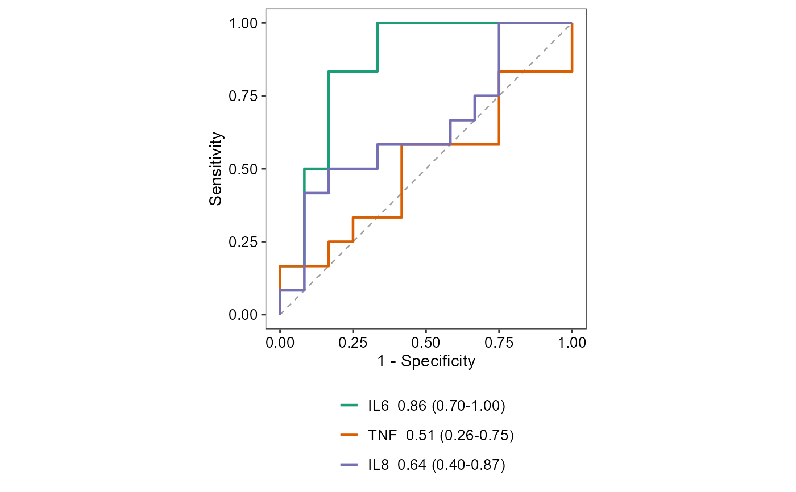

Draws receiver operating characteristic (ROC) curves of individual proteins for a two-group comparison, with the area under the curve (AUC) and its 95 percent confidence interval (DeLong) in the legend. Requires the `pROC` package.
Usage
plot_roc(
data,
assays,
group = NULL,
positive = NULL,
assay_col = NULL,
value_col = NULL,
sample_col = NULL,
ci = TRUE,
direction = c("auto", "<", ">"),
show_direction = FALSE,
palette = NULL,
title = NULL,
...
)Arguments
- data
A data.frame in long format (one row per sample and assay), or an OlinkExperiment.
- assays
Character vector of assay (protein) names, one curve each.
- group
Name of the grouping column. If NULL, auto-detected. It must have exactly two levels; subset the data first if it has more.
- positive
Level of `group` treated as the event (the "case"). If NULL (default), the second level (alphabetical, or factor order) is used.
- assay_col
Name of the assay column. If NULL, auto-detected.
- value_col
Name of the NPX value column. If NULL, auto-detected.
- sample_col
Name of the sample ID column. If NULL, auto-detected.
- ci
Logical; add the 95 percent confidence interval of the AUC to the legend (default TRUE).
- direction
`"auto"` (default), `"<"` (cases have higher values) or `">"` (cases have lower values).
- show_direction
Logical; if `TRUE`, appends `(up)` or `(down)` to each legend label indicating whether cases have higher (`<`) or lower (`>`) NPX values than controls (default `FALSE`).
- palette
Optional character vector or palette name, one colour per curve.
- title
Plot title.
- ...
Additional arguments passed to `ggplot2::geom_path()`.
Value
A ggplot object. `p$data` has one row per point of each curve, with the columns `Assay`, `.fpr`, `.sens`, `.auc`, `.lower`, `.upper`, `.direction`.
Details
Replicate rows (the same sample and assay more than once, for example a protein measured on two Olink panels) are averaged. By default the direction of each marker is chosen so that the AUC is at least 0.5 (a protein may be higher or lower in cases); set `direction` to fix it. Each curve is the apparent performance of a single protein on these samples, with no cross-validation.
Examples
# \donttest{
d <- probc[probc$Timepoint == 1, ]
plot_roc(d, assays = c("IL6", "TNF", "IL8"), group = "Project")

# }